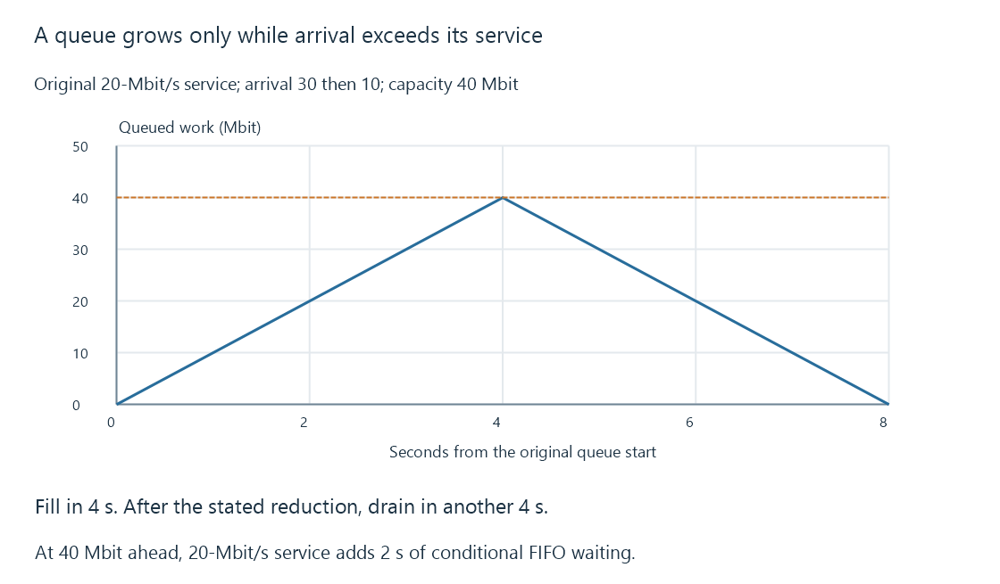

Network congestion and competing arrival rates
Network congestion occurs when competing offered work exceeds a path’s service over time, producing queued delay, drops or sender adaptation under the implemented policy.
A path can have a ready link and reachable server while several senders offer more work than it can serve. The excess must wait, be rejected or change through the senders’ behavior.
That resource mismatch is the basis of network congestion.
A queue integrates arrival minus service
Use this original fluid model:
{
"serviceMbitPerSecond": 20,
"firstArrivalMbitPerSecond": 30,
"reducedArrivalMbitPerSecond": 10,
"capacityMbit": 40,
"initialQueueMbit": 0
}
During the first phase, the queue grows ten Mbit each second. It reaches forty Mbit after four seconds.
If arrival then falls to ten while service remains twenty, the queue drains at ten Mbit/s and becomes empty after another four seconds.

The exercise assumes continuous rates and one FIFO work budget. It is not an implementation of a router queue or TCP congestion algorithm.
Waiting follows the work already ahead
At forty Mbit queued and twenty-Mbit/s service, clearing the work ahead takes two seconds under this model.
A small new packet can therefore wait much longer than its own serialization time. The delay belongs to queued work, not merely the packet’s size.
A larger buffer allows more excess to wait. It does not increase the twenty-Mbit/s service rate.
Finite capacity creates another decision
If thirty continues arriving after the queue reaches capacity, the original excess rate remains ten Mbit/s.
The implementation can drop traffic, apply backpressure at another layer, mark congestion where supported, or take another defined action. It cannot store unbounded excess in the finite stated capacity.
Transport senders can react to loss/marking and timing feedback. That reaction has its own delay and policy; it is not instantaneous agreement between every sender.
Several application uses share the constrained stage
Remote video, backups, photo uploads and other traffic can compete at a household uplink. Wireless airtime can add another shared resource before that link.
A per-stream media cap can reduce one demand. It does not reserve all remaining service from other uses or convert a congested aggregate into an unconstrained path.
Upload bandwidth adds the active payloads. QoS explains another choice about sharing service between traffic classes.
Queue management addresses delay as well as utilization
A path can keep transmitting at a high useful rate while maintaining a large standing queue. That produces a different experience for interactive operations.
Bufferbloat develops that persistent waiting. CoDel and FQ-CoDel are cited Experimental references for relevant queue-management ideas; the arithmetic here does not claim their full algorithm or behavior on an unspecified gateway.
See Also
- Bufferbloat and standing queue delay
- Quality of service, classification and scheduling
- Upload bandwidth and simultaneous remote streams
- TCP: an ordered byte stream for media delivery